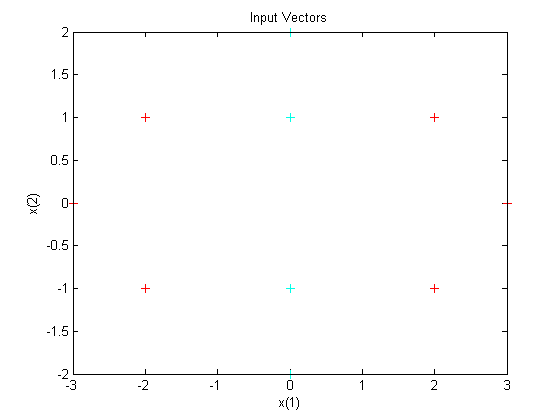
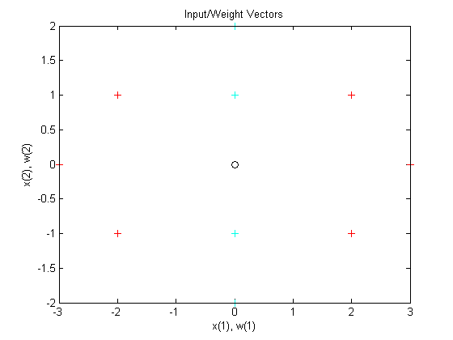
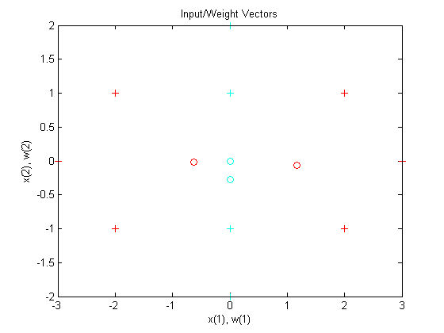

Learning Vector Quantization
An LVQ network is trained to classify input vectors according to given targets.
Let X be 10 2-element example input vectors and C be the classes these vectors fall into. These classes can be transformed into vectors to be used as targets, T, with IND2VEC.
x = [-3 -2 -2 0 0 0 0 +2 +2 +3;
0 +1 -1 +2 +1 -1 -2 +1 -1 0];
c = [1 1 1 2 2 2 2 1 1 1];
t = ind2vec(c);
Here the data points are plotted. Red = class 1, Cyan = class 2. The LVQ network represents clusters of vectors with hidden neurons, and groups the clusters with output neurons to form the desired classes.
colormap(hsv); plotvec(x,c) title('Input Vectors'); xlabel('x(1)'); ylabel('x(2)');
Here LVQNET creates an LVQ layer with four hidden neurons and a learning rate of 0.1. The network is then configured for inputs X and targets T. (Configuration normally an unnecessary step as it is done automatically by TRAIN.)
net = lvqnet(4,0.1); net = configure(net,x,t);
The competitive neuron weight vectors are plotted as follows.
hold on w1 = net.IW{1}; plot(w1(1,1),w1(1,2),'ow') title('Input/Weight Vectors'); xlabel('x(1), w(1)'); ylabel('x(2), w(2)');
To train the network, first override the default number of epochs, and then train the network. When it is finished, replot the input vectors '+' and the competitive neurons' weight vectors 'o'. Red = class 1, Cyan = class 2.
net.trainParam.epochs=150; net=train(net,x,t); cla; plotvec(x,c); hold on; plotvec(net.IW{1}',vec2ind(net.LW{2}),'o');
Now use the LVQ network as a classifier, where each neuron corresponds to a different category. Present the input vector [0.2; 1]. Red = class 1, Cyan = class 2.
x1 = [0.2; 1]; y1 = vec2ind(net(x1))
y1 =
2